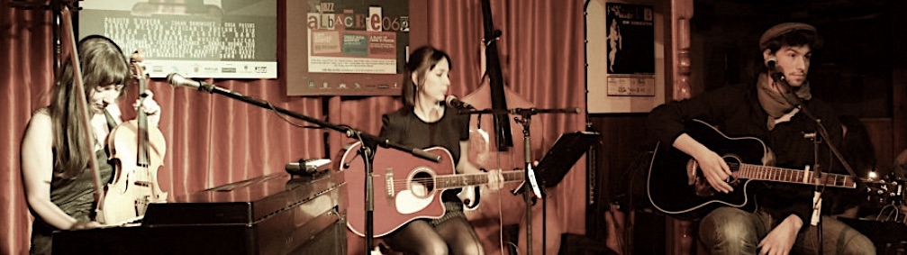

RST Raquel Sam Tina
RST est un trio éphémère composé de Raquel Diaz, Samuel Genin et Tina Oepen.
Nous nous sommes rencontré à Albacete, Espagne, où nous vivions alors tous les 3, en 2011. Cette collaboration a donné lieu à un unique concert mélangeant et nous approriant les chansons des uns des autres (nous écrivions et composions tous trois), au Nido de Arte. L'audio de ce concert a été enregistré et on peut retrouver en cliquant ici.